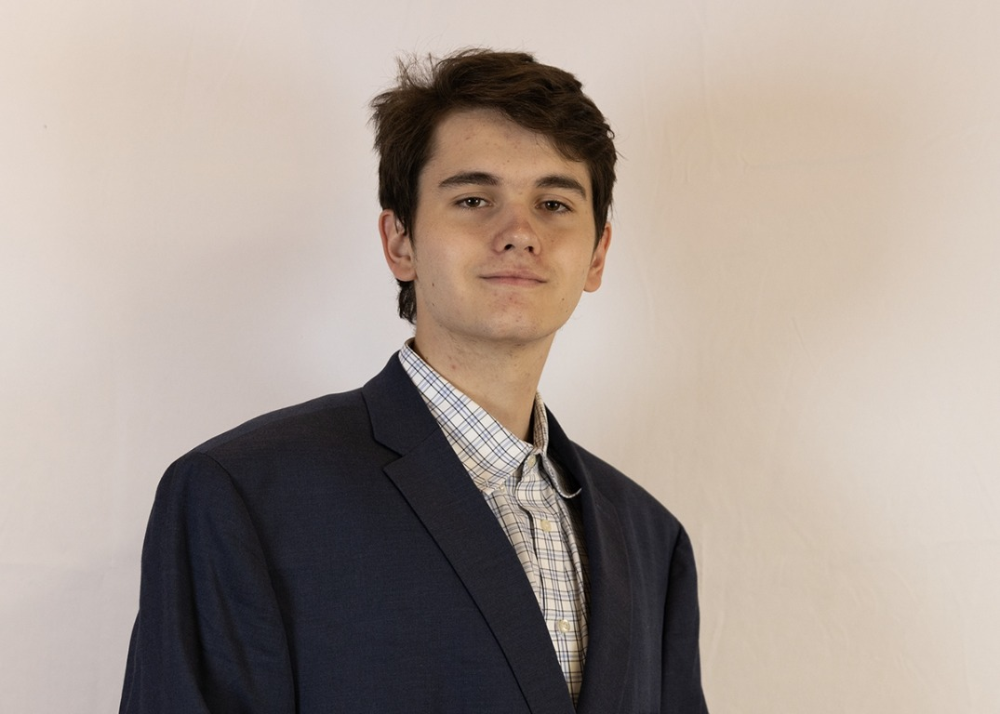

Programming Languages
Java · C · Python · Verilog

About
I am Gavin Thennes, an engineering student interested in how software and hardware work together to solve practical problems. I enjoy learning new technologies and building things with a team, from mobile applications to processors and robots.
My project experience has helped me develop a practical, collaborative approach to engineering. I value curiosity, clear communication, and learning through hands on work.
Career Objectives
I hope to build a career where I can keep growing as an engineer while contributing to useful, reliable technology. I am interested in opportunities that let me work on software and connected systems, learn from experienced teammates, and take on increasingly challenging problems.
My goal is to bring curiosity, responsibility, and a willingness to learn to a team, and to help turn ideas into solutions that have a positive impact.
Skills
Java · C · Python · Verilog
Android Studio · Docker · Linux
GitHub Copilot · AI assisted development · AI concepts explored through the AI Arcade Cabinet project
Frontend development · Android apps · Computer architecture · Robotics · Testing and troubleshooting